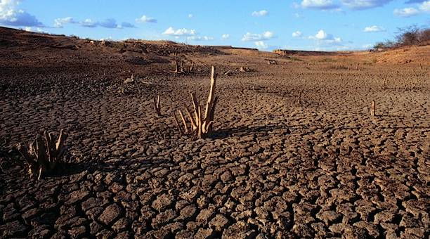

UM POUCO SOBRE A CAATINGA

Caatinga é o único bioma exclusivamente brasileiro. É marcada pela ocorrência do clima Semiárido, quente e seco, e também por espécies endêmicas altamente adaptadas à seca.
Esse bioma é encontrado em áreas do Nordeste do Brasil, nos estados do Maranhão, Piauí, Ceará, Rio Grande do Norte, Paraíba, Pernambuco, Alagoas, Sergipe, Bahia e parte de Minas Gerais. Toda essa área abrange cerca de 844 mil km2, ou seja, 11% do território brasileiro.
O nome Caatinga significa, em tupi-guarani, "mata branca". Esse nome faz referência a cor predominante da vegetação durante a estação de seca, onde quase todas as plantas perdem as folhas para diminuir a transpiração e evitar a perda de água armazenada. No inverno, devido a ocorrência de chuva, as folhas verdes e as flores voltam a brotar.
O clima que compreende a região da Caatinga é o clima tropical semiárido. Esse clima é marcado por longos períodos de estiagem, isto é, sem chuvas. O índice pluviométrico é abaixo dos 800 mm/ano. As temperaturas são geralmente elevadas, com uma média de 27 ºC, podendo alcançar números maiores, superiores a 32 ºC. Durante o período de chuva, os índices pluviométricos podem atingir os 1000 mm/ano. Já nos períodos mais secos, há uma baixa, chegando a 200mm/ano.
A vegetação da Caatinga apresenta adaptações únicas para sobreviver às condições de aridez do solo e escassez de água. Esse bioma abrange uma grande diversidade de espécies vegetais, muitas delas endêmicas, que se desenvolvem exclusivamente nessa região. Dependendo das condições naturais, a vegetação da Caatinga apresenta diferentes características, variando entre três estratos:
- Arbóreo: árvores com altura entre 8 e 12 metros, como o juazeiro, a aroeira e a baraúna.
- Arbustivo: plantas com altura entre 2 e 5 metros.
- Herbáceo: vegetação com altura inferior a 2 metros.
Nas áreas com maior umidade do solo, a Caatinga se assemelha a uma mata, onde predominam espécies como o juazeiro, também conhecido como "laranjeira do vaqueiro", que mantém suas folhas mesmo durante a seca graças às suas raízes profundas que absorvem água em camadas profundas do solo. Já em regiões mais secas, com solos rasos e pedregosos, a vegetação é composta por arbustos baixos e tortuosos, como o facheiro, o mandacaru e o xique-xique, que deixam o solo parcialmente descoberto.
As plantas da Caatinga possuem diversas adaptações para minimizar a perda de água. Por exemplo:
Algumas espécies, como o mandacaru, têm folhas transformadas em espinhos, reduzindo a transpiração e protegendo-se contra animais herbívoros.
Muitas apresentam raízes superficiais que cobrem o solo para absorver a maior quantidade possível de água durante os curtos períodos de chuva.
Outras possuem folhas revestidas por uma camada de cera, como a carnaubeira, que reduz ainda mais a transpiração.
Além disso, algumas plantas conseguem realizar fotossíntese sem a presença de folhas, utilizando caules verdes ricos em clorofila para produzir nutrientes e captar luz solar. Essa característica garante que espécies possam continuar o processo de produção de energia mesmo em condições extremas.
Espécies cactáceas e bromeliáceas, como a macambira, têm grande capacidade de armazenamento de água, sendo uma fonte vital de alimento para os animais durante a seca. O xeromorfismo, uma adaptação fisiológica que inclui a produção de cera nas folhas, é outra característica comum dessas plantas.
Por fim, as características espinhosas da maioria das plantas tornam o uso de roupas de couro essencial para os vaqueiros que trabalham na região, um exemplo de como a vida humana também se adapta às condições do bioma.
 FAUNA & DESERTIFICAÇÃO
FAUNA & DESERTIFICAÇÃO
A fauna da Caatinga é bastante diversificada, mas não tão conhecida, havendo diversas espécies de animais endêmicos. Os animais que se encontram na região abrangida por...
 DESAFIOS
DESAFIOS
Caatinga, único bioma exclusivamente brasileiro, enfrenta uma série de ameaças que comprometem sua biodiversidade e a qualidade de vida das cerca de 30 milhões de pesso...
 CURIOSIDADES
CURIOSIDADES
Caatinga é o único bioma exclusivamente brasileiro. É marcada pela ocorrência do clima Semiárido, quente e seco, e também por espécies endêmicas altamente adaptadas à seca.